전기기사 (2007-05-13 기출문제)
1과목: 전기자기학
1. 자유공간 내의 고유 임피던스는? (단, μ0 : 진공의 투자율, ε0 : 진공의 유전율이다.)
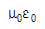
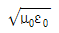
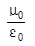
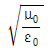
(정답률: 84%)

2. 이론방정식의 형태로 나타낸 맥스웰의 전자계 기초방정식에 해당되는 것은?
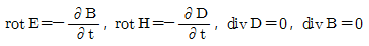
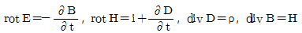
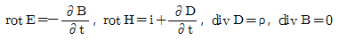
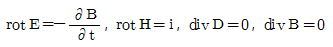
(정답률: 76%)
3. 그림과 같이 반지름 a인 무한장 평행도체 A, B가 간격 d로 놓여 있고, 단위길이당 각각 ＋λ, -λ의 전하가 균일하게 분포되어 있다. A, B 도체간의 전위치는 몇 [V]인가? (단, d≫a이다.)
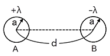
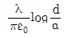
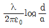
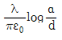
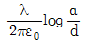
(정답률: 57%)
4. 유전체의 분극힘이 x일 때 분극벡터 P=xE의 관계가 있다고 한다. 비유전률 4인 유전체의 분극률은 진공의 유전율 ε0의 몇 배인가?
- 1
- 3
- 9
- 12
(정답률: 79%)
5. 어떤 막대철심이 있다. 단면적이 0.5[m2], 길이가 0.8[m], 비투자율이 20이다. 이 철심의 자기저항은 약 몇 [AT/Wb]인가?
- 2.56×104
- 3.63×104
- 4.45×104
- 6.37×104
(정답률: 63%)
6. 길이 1[m]인 철심(μr=1000)의 자기회로에 1[㎜]의 공극이 생겼다면 전체의 자기저항은 약 몇 배로 증가되는가? (단, 각 부의 단면적은 일정하다.)
- 1.5
- 2
- 2.5
- 3
(정답률: 57%)
7. 자유공간 중에서 점 P(2, -4, 5)가 도체면상에 있으며 이 점에서 전계 E=3ax-6ay＋2az[V/m]이다. 도체면에 법선성분 En 및 접선성분 Et의 크기는 몇 [V/m]인가?
- En=3, Et=-6
- En=7, Et=0
- En=2, Et=3
- En=-6, Et=0
(정답률: 67%)
8. 반지름 50[㎝]의 서로 나란한 두 원형 코일(헤롬홀쯔 코일)을 1[mm]간격으로 동축상에 평행 배치한 후 각 코일에 100[A]의 전류가 같은 방향으로 흐를 때 코일 상호간에 작용하는 인력은 몇 [N]정도 되는가?
- 3.14
- 6.28
- 31.4
- 62.8
(정답률: 42%)
9. 비유전율이 4인 매장에서 주파수 100[MHz]인 전자파의 파장은 몇 [m]인가?
- 1.5
- 2
- 3
- 4
(정답률: 45%)
10. 반지름이 ɑ[m]이고 단위길이에 대한 권수가 n인 무한장 솔레노이드의 단위 길이당의 자기인덕턴스는 몇 [H/m]인가?
- μπɑ2n2
- μπɑn
- (ɑn)/(2μπ)
- 4μπɑ2n2
(정답률: 74%)
11. 그림과 같이q 1=6×10-8[C], q2=-12×10-8[C]의 두 전하가 서로 10[㎝]떨어져 있을 때 전계세기가 0이 되는 점은?
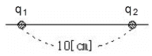
- q1과 q2의 연상선상 q1으로부터 왼쪽으로 24.1[㎝]지점이다.
- q1과 q2의 연상선상 q1으로부터 왼쪽으로 14.1[㎝]지점이다.
- q1과 q2의 연상선상 q2으로부터 왼쪽으로 24.1[㎝]지점이다.
- q1과 q2의 연상선상 q2으로부터 왼쪽으로 14.1[㎝]지점이다.
(정답률: 52%)
12. π[A]가 흐르고 있는 무한장 직선 도체로부터 수직으로 10[㎝]떨어진 점의 자계의 세기는 몇 [A/m]인가?
- 0.⑤
- 0.5
- 5
- 10
(정답률: 65%)
13. 면적 A[m2], 간격 d[m]인 평행판콘덴서의 전극판에 비유전률 ℇr인 유전체를 가득히 채웠을 때, 전극판 간에 V[V]를 가하면 전극판을 떼어내는데 필요한 힘은 몇 [N]인가?
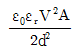
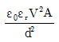
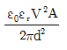
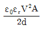
(정답률: 36%)
14. 그림과 같이 정전용량이 C0[F]가 되는 평행판 공기콘덴서에 판면적의 1/2되는 공간에 비유전률이 ℇs인 유전체를 채웠을 때 정전용량은 몇 F인가?
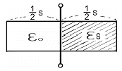
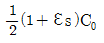
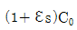
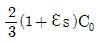
- C0
(정답률: 70%)
15. 반지름이 10[㎝]인 접지 구도체의 중심으로부터 1[m] 떨어진 거리에 한 개의 전자를 놓았다. 접지구도체에 유도된 총전하량은 몇 [C]인가?
- -1.6×10-20
- -1.6×10-21
- 1.6×10-20
- 1.6×10-21
(정답률: 38%)
16. 다음 중 자기유도계수(self inductance)를 구하는 방법이 아닌 것은?
- 자기에너지법
- 자속쇄교법
- 벡터포텐셜법(Vector Potential Method)
- 스칼라포텐셜법(Scalar Potential Method)
(정답률: 63%)
17. 다음 중 정상자계(시불변자계)의 원천이 아닌 것은?
- 도선을 흐르는 직류전류
- 영구자석
- 가속도를 가지고 이동하는 전하
- 일정한 속도로 회전하는 대전원반(帶電圓盤)
(정답률: 53%)
18. 다음 중 정전계와 정자계의 대응관계가 성립되는 것은?
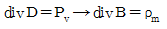
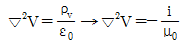
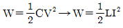
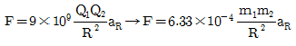
(정답률: 75%)
19. 다음 중 전계의 세기를 나타낸 것으로 옳지 않은 것은?
- 선전하에 의한 전계 :

- 점전하에 의한 전계 :

- 구전하에 의한 전계 :

- 전기 쌍극자에 의한 전계 :

(정답률: 71%)
20. 무한 평면도체에서 r[m] 떨어진 곳에 ρ[C/m]의 전하분포를 갖는 직선도체를 놓았을 때 직선도체가 받는 힘의 크기[N/m]는? (단, 공간의 유전율은 ℇ0이다.)
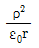
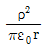
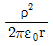
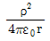
(정답률: 43%)
2과목: 전력공학
21. 전력원선도의 가로축과 세로축을 나타내는 것은?
- 전압과 전류
- 전압과 전력
- 전류와 전력
- 유효전력과 무효전력
(정답률: 74%)
22. 조정지 용량 100,000[m3], 유효낙차 100[m]인 수력발전소가 있다. 조정지의 전 용량을 사용하여 발생될 수 있는 전력량은 약 몇 [kWh]인가? (단, 수차 및 발전기의 종합효율을 75[%]로 하고 유효낙차는 거의 일정하다고 본다.)
- 20000
- 25000
- 30000
- 50000
(정답률: 43%)
23. 재점호가 가장 일어나기 쉬운 차단전류는?
- 동상(同相)전류
- 지상전류
- 진상전류
- 단락전류
(정답률: 58%)
24. 차단기의 정격 차단시간은?
- 가동접촉자의 동작시간부터 소호까지의 시간
- 고장 발생부터 소호까지의 시간
- 가동 접촉자의 개극부터 소호까지의 시간
- 트립코일 여자부터 소호까지의 시간
(정답률: 71%)
25. 3상 배전선로의 밀단에 지상역률 80%, 160[kW]인 평형 3상 부하가 있다. 부하점에 전력용 콘덴서를 접속하여 선로 손실을 최소가 되게 하려면 전력용 콘덴서의 용량은 몇 [kVA]가 필요한가? (단, 부하단 전압은 변하지 않는 것으로 한다.)
- 100
- 120
- 160
- 200
(정답률: 56%)
26. 송전계통에서 절연 협조의 기본이 되는 사항은?
- 애자의 섬락전압
- 권선의 절연내력
- 피뢰기의 제한전압
- 변압기 붓싱의 섬락전압
(정답률: 70%)
27. 모선 보호에 사용되는 계전방식이 아닌 것은?
- 전류차동 보호방식
- 방향거리 계전방식
- 위상 비교방식
- 선택접지 계전방식
(정답률: 50%)
28. 코로나 방지에 가장 효과적인 방법은?
- 선간거리를 증가시킨다.
- 전선의 높이를 가급적 낮게 한다.
- 선로의 절연을 강화 한다.
- 복도체를 사용한다.
(정답률: 76%)
29. 가공지선을 설치하는 목적이 아닌 것은?
- 뇌해 방지
- 정전 차폐효과
- 전자 차폐 효과
- 코로나의 방생방지
(정답률: 65%)
30. 전선의 반지름 r[m], 소도체간의 거리 ℓ[m], 선간 거리 D[m]인 복도체의 인덕턴스 L은 L=0.46⑤ P＋0.25[mH/km]이다. 이 식에서 P에 해당되는 값은?
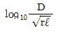
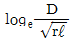
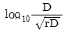
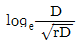
(정답률: 62%)
31. 기력발전소에서 1톤의 석탄으로 발생할 수 있는 전력량은 약 몇 [kWh]인가? (단, 석탄의 발열량은 5500[kcal/kg]이고 발전소 효율을 33[%]로 한다.)
- 1860
- 2110
- 2580
- 2840
(정답률: 51%)
32. 다음 중 지락사고의 건전상의 전압 상승이 가장 적은 접지방식은?
- 소호리액터접지식
- 고저항접지식
- 비접지식
- 직접접지식
(정답률: 61%)
33. 그림과 같은 3상 송전계통에서 송전단 전압은 3300[V]이다. 지금 1점 P에서 3상 단락사고가 발생했다면 발전기에 흐르는 단락전류는 약 몇 [A]가 되는가?
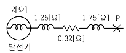
- 320
- 330
- 380
- 410
(정답률: 59%)
34. 원자력발전소에서 원자로의 냉각재가 갖추어야 할 조건으로 옳지 않은 것은?
- 중성자의 흡수 단면적이 클 것
- 유도 방사능이 적을 것
- 비열이 클 것
- 열전도율이 클 것
(정답률: 63%)
35. 22[kV], 60[Hz] 1회선의 3상송전선에서 무부하 충전전류를 구하면 약 몇 [A]인가? (단, 송전선의 길이는 20[km]이고, 1선 1[km]당 정전용량은 0.5[μF]이다.)
- 12
- 24
- 36
- 48
(정답률: 55%)
36. 증식비가 1보다 큰 원자로는?
- 흑연로
- 중수로
- 고속증식로
- 경수로
(정답률: 64%)
37. 유효낙차 90[m], 출력 103000[kW], 비속도(특유속도) 210[m·kW]인 수차의 회전속도는 약 몇 [rpm]인가?
- 150
- 180
- 210
- 240
(정답률: 39%)
38. 저압뱅킹배전방식에서 캐스케이딩(cascading) 현상이란?
- 저압선이나 변압기에 고장이 생기면 자동적으로 고장이 제거되는 현상
- 변압기의 부하배분이 균일하지 못한 현상
- 저압선의 고장에 의하여 건전한 변압기의 일부 또는 전부가 차단되는 현상
- 전압동요가 적은 현상
(정답률: 77%)
39. 그림과 같은 수용설비용량과 수용률을 갖는 부하의 부등률이 1.5이다. 평균부하 역률을 75%라 하면 변압기 용량은 약 몇 [kVA]인가?
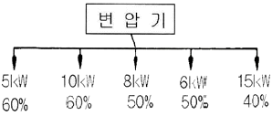
- 45
- 30
- 20
- 15
(정답률: 57%)
40. 154[kV] 송전선로의 전압을 345[kV]로 승압하고 같은 손실율로 송전한다고 가정하면 송전전력은 승압전의 약 몇 배 정도 되겠는가?
- 2
- 3
- 4
- 5
(정답률: 63%)
3과목: 전기기기
41. 3상 전압조정기의 원리는 어느 것을 응용한 것인가?
- 3상 동기 발전기
- 3상 변압기
- 3상 유도 전동기
- 3상 교류자 전동기
(정답률: 66%)
42. 4극 고정자 홈수 48인 3상 유도전동기의 홈 간격을 전기각으로 표시하면 어떻게 되는가?
- 3.75°
- 7.5°
- 15°
- 30°
(정답률: 56%)
43. 3000[V], 60[Hz], 8극 100[kW]의 3상 유도 전동기가 있다. 전부하에서 2차 구리손이 3[kW], 기계손이 2[kW]이라면 전부하 회전수는 약 몇 [rpm]인가?
- 498
- 593
- 874
- 984
(정답률: 61%)
44. 직류발전기에서 회전속도가 빨라지면 정류가 힘드는 이유는?
- 리액턴스 전압이 커지기 때문에
- 정류 자속이 감소하기 때문에
- 브러시 접촉저항이 커지기 때문에
- 정류 주기가 길어지기 때문에
(정답률: 52%)
45. 효율 80[%], 출력 10[kW]인 직류발전기의 고정손실이 1300[W]라 한다. 이 때 발전기의 가변손실은 몇 [W]인가?
- 1000
- 1200
- 1500
- 2500
(정답률: 58%)
46. 직류기의 철손에 관한 설명으로 옳지 않은 것은?
- 철손에는 풍손과 와전류손 및 저항손이 있다.
- 전기자 철심에는 철손을 작게 하기 위하여 규소강판을 사용한다.
- 철에 규소를 넣게 되면 히스테리시스손이 감소한다.
- 철에 규소를 넣게 되면 전기 저항이 증가하고 와전류손이 감소한다.
(정답률: 59%)
47. 변압기에서 콘서베이터의 용도는?
- 통풍장치
- 변압유의 열화방지
- 강제순환
- 코로나 방지
(정답률: 70%)
48. 동기 전동기의 진상 전류는 어떤 작용을 하는가?
- 증자작용
- 감자작용
- 교차 자화 작용
- 아무 작용도 없음
(정답률: 66%)
49. 동기발전기에서 자기여자 방지법이 되지 않는 것은?
- 전기자 반작용이 적고 단락비가 큰 발전기를 사용한다.
- 발전기를 여러 대 병렬로 사용한다.
- 송전선 말단에 리액터나 변압기를 사용한다.
- 송전선 말단에 동기조상기을 접속하고 계자권선에 과여자한다.
(정답률: 53%)
50. 권수비가 70인 단상변압기의 전부하 2차 전압은 200[V], 전압변동률이 4[%]일 때 무부하시 1차 단자 전압은 몇 [V]인가?
- 11670
- 121360
- 13261
- 14560
(정답률: 67%)
51. 다음 중 권선형 유도전동기의 기동법은 어느 것인가?
- 분산기동법
- 반발기동법
- 콘덴서 기동법
- 2차 저항기동법
(정답률: 61%)
52. 사이클로 컨버터를 가장 올바르게 설명한 것은?
- 게이트 제어 소자이다.
- 실리콘 단방향성 소자이다.
- 교류 전력의 주파수를 변환하는 장치이다.
- 교류제어 소자이다.
(정답률: 62%)
53. 단상 변압기를 병렬 운전하는 경우 부하 분담을 용량에 비례시키는 조건 중에서 틀린 것은?
- 정격전압과 변압비가 같을 것
- 각 변위가 다를 것
- %임피던스 강하가 같은 것
- 극성이 같을 것
(정답률: 64%)
54. 송전 계통에 접속한 무부하의 동기 전동기를 동기조상기라 한다. 이때 동기 조상기의 계자를 과여자로 해서 운전할 경우 옳지 않은 것은?
- 콘덴서로 작용한다.
- 위상이 뒤진 전류가 흐른다.
- 송전선의 역률을 좋게 한다.
- 송전선의 전압강하를 감소시킨다.
(정답률: 60%)
55. 유도전동기의 2차 회로에 2차 주파수와 같은 주파수로 적당한 크기와 위상 전압을 외부에 가하는 속도 제어법은?
- 1차 전압 제어
- 극수 변환 제어
- 2차 저항 제어
- 2차 여자 제어
(정답률: 57%)
56. 변압기의 철손과 동손을 측정할 수 있는 시험은?
- 무부하시험, 단락시험
- 부하시험, 유도시험
- 무부하시험, 절연내력시험
- 단락시험, 극성시험
(정답률: 72%)
57. 10[kVA], 2000/100[V] 변압기의 1차 환산 등가 임피던스가 6＋j8[Ω]일 때 % 리액턴스 강하는 몇 [%]인가?
- 1.5
- 2
- 5
- 10
(정답률: 54%)
58. 3상 유도전동기의 특성에서 비례추이 하지 않는 것은?
- 2차 전류
- 1차 전류
- 역률
- 출력
(정답률: 51%)
59. 다음 중 2방향성 3단자 사이리스터는 어느 것인가?
- SCR
- SSS
- SCS
- TRIAC
(정답률: 62%)
60. 다음 중 DC서보모터의 회전 전기자 구조가 아닌 것은?
- 슬롯(Slot)이 있는 전기자
- 철심이 있고 슬롯(Slot)이 없는 전기자
- 철심이 없는 평판상 프린트 코일형
- 전기자 권선이 없는 돌극형
(정답률: 46%)
4과목: 회로이론 및 제어공학
61. 그림과 같은 회로에서 2[Ω]의 단자 전압은 몇 [V]인가?
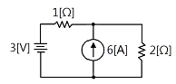
- 3
- 4
- 6
- 8
(정답률: 49%)
62. 대칭 3상 Y결선 부하에서 각상의 임피던스가 Z=12＋j16[Ω]이고, 부하전류가 10[A]일 때 이 부하의 선간전압은 약 몇 [V]인가?
- 235.7
- 346.4
- 456.4
- 524.7
(정답률: 66%)
63. 기본파의 40[%]인 제3고조파와 30[%]인 제5고조파를 포함하는 전압파의 왜형률은 얼마인가?
- 0.3
- 0.5
- 0.7
- 0.9
(정답률: 62%)
64. 3상 불평형 전압에서 역상전압이 25[V]이고, 정상전압이 100[V], 영상전압이 10[V]라 할 때, 전압의 불평형율은 얼마인가?
- 0.25
- 0.4
- 4
- 10
(정답률: 59%)
65. R=5[Ω], L=20[mH] 및 가변 콘덴서 C로 구성된 RLC직렬 회로에 주파수 1000[Hz]인 교류를 가한 다음 C를 가변시켜 직렬 공진시킬 때 C의 값은 약 몇 [μF]인가?
- 1.27
- 2.54
- 3.52
- 4.99
(정답률: 55%)
66. 4단자망의 파라미터 정수에 관한 서술 중 잘못된 것은?
- ABCD 파라미터 중 A 및 D는 차원(dimension)이 없다.
- h 파라미터 중 h12 및 h21은 차원이 없다.
- ABCD 파라미터 중 B는 어드미턴스, C는 임피던스의 차원을 갖는다.
- h 파라미터 중 h11은 임피던스, h22는 어드미턴스의 차원을 갖는다.
(정답률: 60%)
67. 그림의 정전용량 C[F]를 충전한 후 스위치 S를 닫아 이것을 방전하는 경우의 과도 전류는? (단, 회로에는 저항이 없다.)
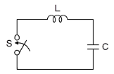
- 불변의 진동전류
- 감쇠하는 전류
- 감쇠하는 진동전류
- 일정치까지 증가한 후 감쇠하는 전류
(정답률: 51%)
68. 그림과 같은 회로의 전달함수 E0(s)/Ei(s)는?
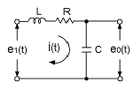
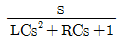
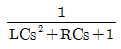
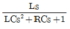
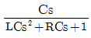
(정답률: 63%)
69. sinωt의 라플라스 변환은?
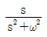
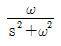
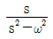
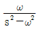
(정답률: 63%)
70. 분포 정수 회로에서 선로 정수가 R, L, C, G이고 무왜 조건이 RC=GL과 같은 관계가 성립될 때 선로의 특성 임피던스 Zo는?
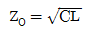
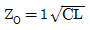
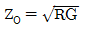
(정답률: 68%)
71. 그림과 같은 회로의 출력 Z는 어떻게 표현되는가?
(정답률: 64%)
72. z-변환함수 z/(z-e-at)에 대응되는 라플라스 변환 함수는?
- 1/(s＋a)2
- 1/(1-e-Ts)
- a/s(s＋a)
- 1/(s＋a)
(정답률: 58%)
73. 다음 그림의 신호흐름 선도에서 C/R는?
(정답률: 67%)
74. 상태방정식 X=Ax(t)＋Bu(t)에서 일 때 특성 방정식의 근은?
- -2, -3
- -1, -2
- -1, -3
- 1, -3
(정답률: 57%)
75. 특성 방정식 s4＋2s3＋5s2＋4s＋2=0으로 주어졌을 때 이것을 후르비쯔(Hurwitz)의 안정 조건으로 판별하면 이 계는 어떻게 되는가?
- 안정
- 불안정
- 조건부 안정
- 임계상태
(정답률: 62%)
76. 1차 요소 G(s)=1/(1＋Ts)인 제어계의 절점 주파수에서 이득은 약 몇 [dB]인가?
- -5
- -4
- -3
- -2
(정답률: 45%)
77. 기준 입력과 주궤환량과의 차로서, 제어계의 동작을 일으키는 원인이 되는 신호는?
- 조작신호
- 동작신호
- 주궤한 신호
- 기준 입력 신호
(정답률: 59%)
78. 그림과 같은 회로망은 어떤 보상기로 사용할 수 있는가? (단, 1≪R1C인 경우로 한다.)
- 진상보상기
- 지상보상기
- 지·진상보상기
- 진·지상보상기
(정답률: 58%)
79. 샘플러의 주기를 T라 할 때 s평면상의 모든 점은 식 z=esT에 의하여 z평면상에 사상 된다. s평면의 좌반평면상의 모든 점은 z평면상 단위원의 어느 부분으로 사상되는가?
- 내점
- 외점
- 원주상의 점
- Z평면 전체
(정답률: 61%)
80. 과도 응답이 소멸되는 정도를 나타내는 감쇠비(decay ratio)는?
- 최대오버슈트/제2오버슈트
- 제3오버슈트/제2오버슈트
- 제2오버슈트/최대오버슈트
- 제2오버슈트/제3오버슈트
(정답률: 65%)
5과목: 전기설비기술기준 및 판단기준
81. 옥내에 시설하는 고압의 이동전선의 종류로 알맞은 것은?
- 600볼트 비닐절연전선
- 비닐 캡타이어 케이블
- 600볼트 고무절연전선
- 고압용의 제3종 클로로프렌 캡타이어 케이블
(정답률: 52%)
82. 저압전로에서 그 전로에 지락이 생겼을 경우에 0.5초 이내에 자동적으로 전로를 차단하는 장치를 시설하는 경우에는 자동차단기의 정격감도전류가 100[mA]인 경우 제3종 접지공사의 접지저항값은 몇 [Ω]이하로 하여야 하는가? (단, 전기적 위험도가 높은 장소인 경우이다.)
- 50
- 100
- 150
- 200
(정답률: 47%)
83. 고압 가공전선의 높이는 철도 또는 궤도를 횡단하는 경우 레일면상 및 [m] 이상이어야 하는가?
- 5
- 5.5
- 6
- 6.5
(정답률: 59%)
84. 6000[V] 가공전선과 안테나 접근하여 시설될 때 전선과 안테나와의 수평이격거리는 몇 [㎝]이상이어야 하는가? (단, 가공전선에는 케이블을 사용하지 않는다고 한다.)
- 40
- 60
- 80
- 100
(정답률: 43%)
85. 다음 중 가공전선로의 지지물에 지선을 시설할 때 옳은 방법은?
- 지선의 안전율을 2.0으로 하였다.
- 소선은 최소 2가닥 이상의 연선을 사용하였다.
- 지중의 부분 및 지표상 20[㎝]까지의 부분은 아연도금 철봉 등 내부식성 재료를 사용하였다.
- 도로를 횡단하는 곳의 지선의 높이는 지표상 5[m]로 하였다.
(정답률: 49%)
86. 특별고압 가공전선로의 지지물에 시설하는 통신선 또는 이에 직접 접속하는 통신선 중 옥내에 시설하는 부분은 몇 [V]이상의 저압 옥내 배선의 규정에 준하여 시설하도록 하고 있는가?
- 150
- 300
- 380
- 400
(정답률: 38%)
87. 금속 덕트 공사에 의한 저압 옥내 배선 공사 중 적합하지 않은 것은?
- 금속 덕트에 넣은 전선의 단면적의 합계가 덕트의 내부 단면적의 20[%]이하가 되게 하여야 한다.
- 덕트 상호간은 견고하고 전기적으로 완전하게 접속하여야 한다.
- 덕트를 조명재에 붙이는 경우에는 덕트의 지지점 간 거리를 8[m] 이하로 하여야 한다.
- 저압 옥내배선의 사용전압이 400[V] 미만인 경우 덕트에 제3종 접지공사를 하여야 한다.
(정답률: 53%)
88. 직류식 전기철도에서 배류선은 상승부분 중 지표상 몇 [m]미만의 부분에 대하여는 절연전선, 캡타이어케이블 또는 케이블을 사용하고, 사람이 접촉할 우려가 없고 또한 손상을 받을 우려가 없도록 시설하여야 하는가?
- 2.0
- 2.5
- 3.0
- 3.5
(정답률: 40%)
89. 직류 귀선은 궤도근접 부분이 금속제 지중관로와 접근하거나 교차하는 경우에 전식방지를 위해 이격거리는 몇 [m]이상이어야 하는가?
- 1
- 1.5
- 2
- 2.5
(정답률: 31%)
90. 다음 중 지중전선로의 전선으로 사용되는 것은?
- 절연전선
- 강심알루미늄선
- 나경동선
- 케이블
(정답률: 59%)
91. 특별고압 배전용변압기의 특별고압측에 반드시 시설하여야 하는 것은?
- 변성기 및 변류기
- 변류기 및 조상기
- 개폐기 및 리액터
- 개폐기 및 과전류 차단기
(정답률: 64%)
92. 저고압 가공전선(다중접지된 중성선은 제외)을 병가하는 방법 중 옳지 않은 것은?
- 저압 가공전선과 고압 가공전선을 동일 지지물에 시설하는 경우 저압 가공전선을 아래에 둔다.
- 저압 가공전선과 고압 가공전선을 동일 지지물에 시설하는 경우 별개의 완금류에 시설해야 한다.
- 저압 가공전선과 고압 가공전선 사이의 이격거리는 50[㎝]이상이어야 한다.
- 저압 가공 인입선을 분기하기 위한 목적으로 저압가공전선을 고압용의 완금류에 시설할 수 없다.
(정답률: 37%)
93. 출퇴표시등 회로에 전기를 공급하기 위한 변압기는 2차측 전로의 사용전압이 몇[V] 이하인 절연변압기 이어야 하는가?
- 40
- 60
- 80
- 100
(정답률: 58%)
94. 저압의 전선로 중 절연 부분의 전선과 대지간의 절연 저항은 사용전압에 대한 누설전류가 최대 공급전류의 얼마를 넘지 않도록 유지하여야 하는가?
- 1/1000
- 1/2000
- 1/3000
- 1/4000
(정답률: 62%)
95. 3.3[kV]용 계기용변성기의 2차측 전로의 접지공사는?(오류 신고가 접수된 문제입니다. 반드시 정답과 해설을 확인하시기 바랍니다.)(관련 규정 개정전 문제로 여기서는 기존 정답인 3번을 누르면 정답 처리됩니다. 자세한 내용은 해설을 참고하세요.)
- 제1종 접지공사
- 제2종 접지공사
- 제3종 접지공사
- 특별제3종 접지공사
(정답률: 48%)
96. 가공 전선로에 사용하는 지지물의 강도계산에 적용하는 갑종 풍압하중을 계산할 때 구성재의 수직 투영면적 1[m2]에 대한 풍압의 기준이 잘못된 것은?
- 목주 : 588 Pa
- 원형 철주 : 588 Pa
- 원형 철근콘크리트주 : 882 Pa
- 강관으로 구성(단주는 제외)된 철탑 : 1255 Pa
(정답률: 65%)
97. 154[kV]가공전선이 도로와 제2차 접근상태로 시설되는 경우 가공전선 중 도로 등에서 수평거리 3[m] 미만으로 시설되는 부분의 길이가 연속하여 100[m] 이하이고 또한 1경간 안에서의 그 부분의 길이의 합계가 몇 [m]이하이어야 하는가?
- 100
- 110
- 120
- 130
(정답률: 43%)
98. 발전소에는 필요한 계측장치를 시설해야 한다. 다음 중 시설을 생략해도 되는 계측장치는?
- 발전기의 전압 및 전류 계측장치
- 주요 변압기의 역률 계측장치
- 발전기의 고정자 온도 계측장치
- 특별 고압용 변압기의 온도 계측장치
(정답률: 55%)
99. 154[kV]가공 전선로를 시가지에 시설하는 경우 특별고압 가공전선에 지락 또는 단락이 생기면 몇 초 이내에 자동적으로 이를 전로로부터 차단하는 장치를 시설하는가?
- 1
- 2
- 3
- 5
(정답률: 64%)
100. 정격전류가 20[A]와 40[A]인 전동기와 정격전류 10[A]인 전열기 5대에 전기를 공급하는 단상 220[V] 저압 간선이 있다. 간선의 최소 허용전류는 몇 [A]인가?
- 100
- 116
- 130
- 146
(정답률: 49%)